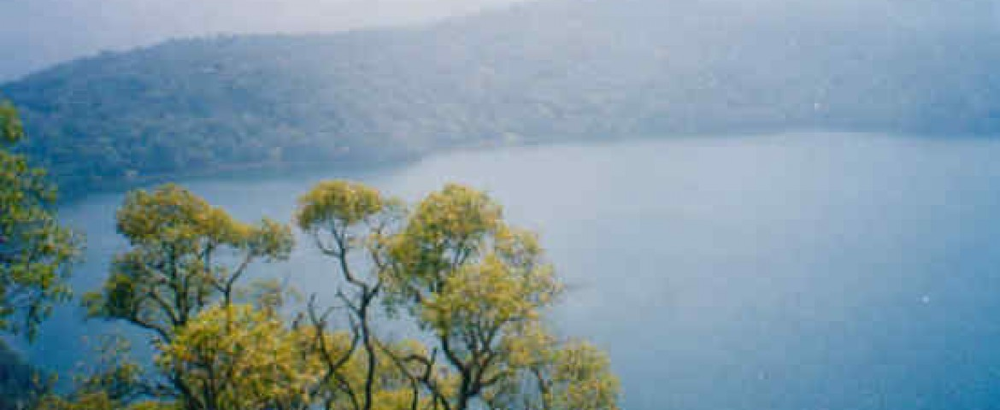

Categorie(s):
fleuves,
lac
lac oku
il faut parcourir 35 Km de routes montagneuses escarpées par endroit pour atteindre l’arrondissement d’Oku à partir de la ville de Kumbo. Cette localité située dans le département du BUI, région du Nord Ouest, abrite des endroits féeriques au rang desquels, le lac Oku. Au-delà de son éclat, il séduit par son côté mystérieux. Cette étendue d’eau se singularise par le fait qu’aucun être vivant ne vit dans ce lac. Aucune feuille des nombreux arbres qui entourent le lac, ne se retrouve à la surface qui impressionne par sa quiétude. « La nage est strictement interdite dans cette eau sinon les esprits vous entraînent à la mort », indique un riverain. Le lac Oku est important pour les populations éponymes environnantes.
C’est un lieu où les sacrifices sont faits aux esprits protecteurs de la localité, qui, d’après les riverains, vivent dans ce lac. « Il ne faut surtout jeter aucun
caillou dans cette eau de peur qu’il ne vous revienne sur le visage. La raison étant les esprits qui n’admettent aucun corps étranger », indiquent certains villageois rencontrés sur le site.
Les rives du lac abritent pourtant plusieurs variétés de grenouilles, de reptiles et d’oiseux. De telles révélations sont de nature à décourager tout touriste. Et pourtant, des centaines de touristes étrangers comme John Hehir, un Irlandais rencontré aux abords du lac, sont prêts à braver les difficultés de la route pour rallier ce coin. Conscient de ce fait, le ministère du tourisme et des loisirs (Mintoul) a entrepris la réalisation d’un certain nombre d’infrastructures dans cette localité pour vulgariser ce site touristique. Des infrastructures de tourisme sont en cours d’achèvement. Selon le Délégué régional pour le tourisme et des loisirs du Nord Ouest, lesdites infrastructures comportent à la fois des auberges, des restaurants et des lieux de loisirs.
Mis à part son lac magique, l’arrondissement d’Oku abrite également d’autres véritables attractions. En dehors du musée de la chefferie supérieure où l’on peut découvrir les œuvres du génie créateur des artisans de la contrée, le miel blanc d’Oku constitue à lui tout seul une véritable curiosité. Extrait selon un mécanisme spécial, il est sur le point d’être protégé par l’Organisation africaine de la propriété intellectuelle (OAPI). La production de cet «or blanc» est une autre activité économique importante de cette unité administrative à côté de l’élevage et l’agriculture.